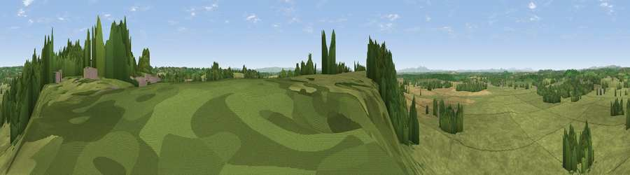

Viewpoint near Inkberrow
#22118 in England · top 45% of its area beats it · near InkberrowWhere it is
The exact computed spot (SP 01725 59275). Click the marker for map links.
The view, rendered

A 360° render of this exact spot computed from the terrain model, tree cover and land cover — summer colours, afternoon light, calibrated against photographs of famous viewpoints. Real trees, hedges and buildings will differ in detail.
The panorama
Grey silhouette: terrain skyline in each direction (720 bearings, Earth curvature and refraction included). Dashed green: skyline with trees (+15 m) and buildings (+8 m) as obstacles. Blue strip: how far the ground is visible on each bearing.
Where the view opens
Wedge length = distance to the farthest visible ground on that bearing (vegetation-aware). Rings at 10, 25 and 50 km.
What fills the view
78% grassland · 14% woodland · 6% cropland · 1% built-up
Angular shares of the visible panorama (visual magnitude), not map area. Landscape diversity 0.30 (0–1 Shannon).
Key numbers
More beautiful places nearby
The staircase of upgrades: each row has a higher view potential than everything closer. Driving times are estimates from straight-line distance, calibrated against real road routing — check an actual route before setting out.
| Place | Direction | Drive | Score |
|---|---|---|---|
| Viewpoint near Inkberrow | SW · 0 km | ~2 min | 58.4 |
| Viewpoint near Inkberrow | SSW · 2 km | ~6 min | 62.8 |
| Viewpoint near Arrow | SE · 5 km | ~12 min | 63.1 |
| Rous Lench Hill | S · 6 km | ~12 min | 64.0 |
| Viewpoint near Lenchwick | S · 11 km | ~22 min | 65.2 |
| Viewpoint near Littleworth | WSW · 16 km | ~28 min | 65.8 |
| Holywell Hill | NNW · 18 km | ~31 min | 69.4 |
| Viewpoint near Elmley Castle | SSW · 19 km | ~32 min | 76.9 |
52.23167, -1.97616 · source: screening · position refined by local search. Computed location — check access rights before visiting.